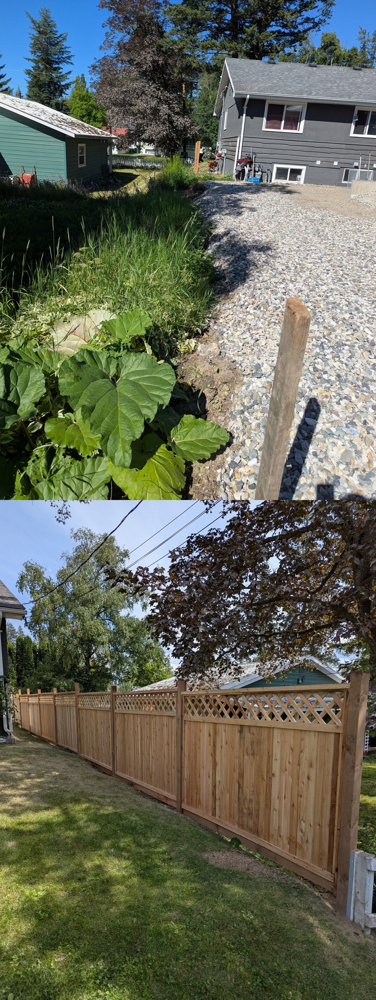
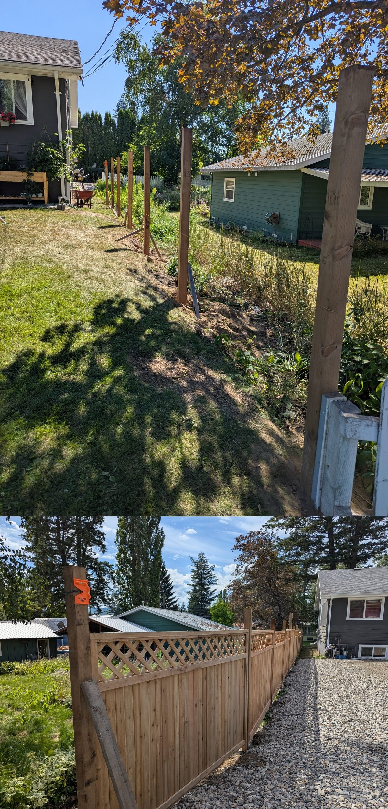
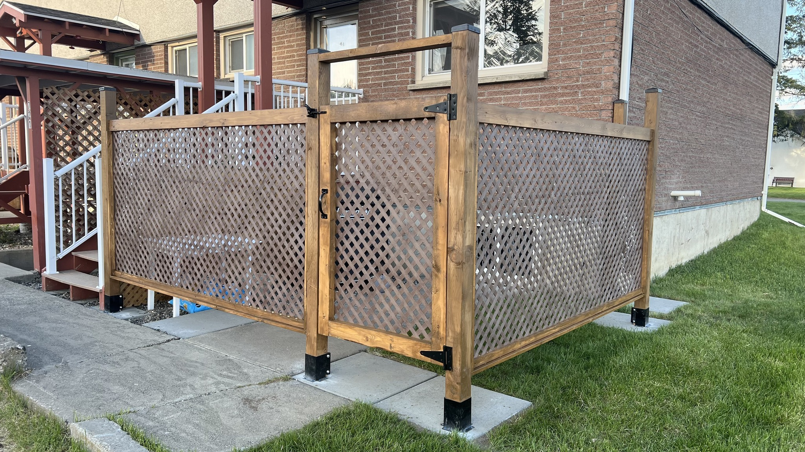
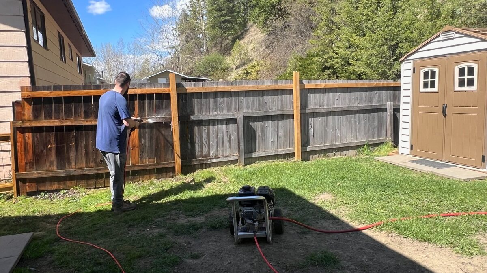

Need a new fence or your old one looking rough? We build, paint, stain, and pressure wash fences across Quesnel and the Cariboo region.
Fences take a beating from Cariboo weather. Sun, rain, snow, and frost crack paint, warp boards, and turn a nice-looking fence grey and sad. We build new ones from scratch — or bring old ones back to life.
Whether it's building a new privacy screen or lattice enclosure, a full repaint on a 100-foot fence line, or pressure washing to remove years of grime, we handle it start to finish.
New fences, privacy screens, lattice enclosures, and gate installations. Cedar, pressure-treated, or composite.
Old finish stripped or sanded, surfaces prepped, and new paint or stain applied. Brushed or sprayed depending on the job.
Years of dirt, moss, and weathering removed. Makes old wood look new again before painting or staining.
Broken boards, leaning posts, sagging gates — we fix what's broken and replace what can't be saved.
Real fence jobs from Quesnel properties.



